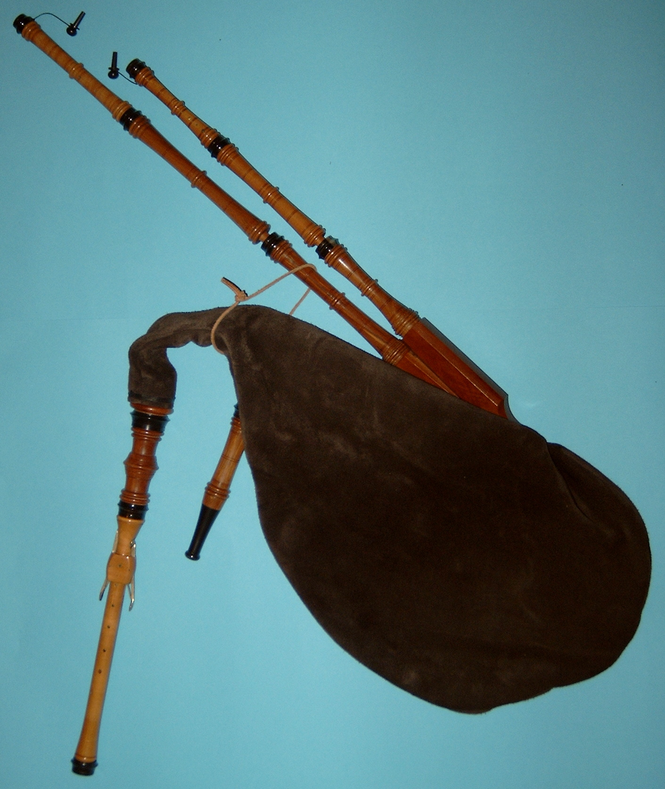
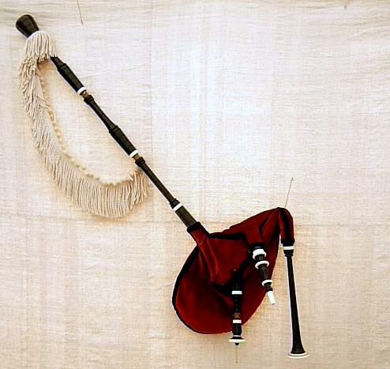
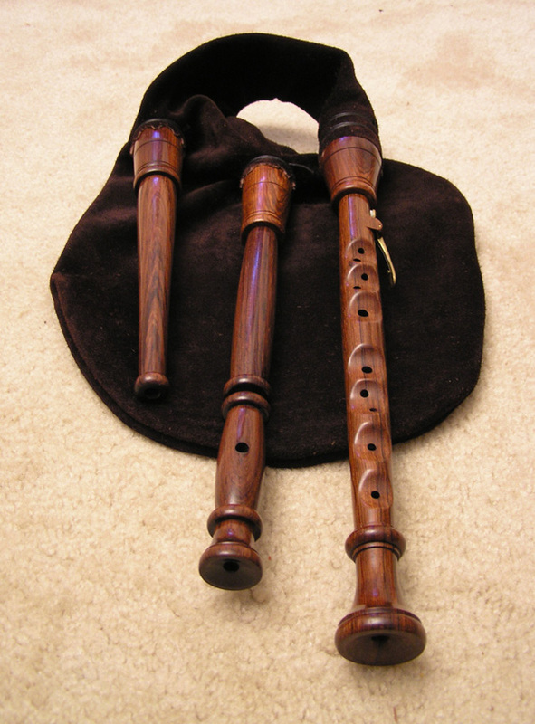
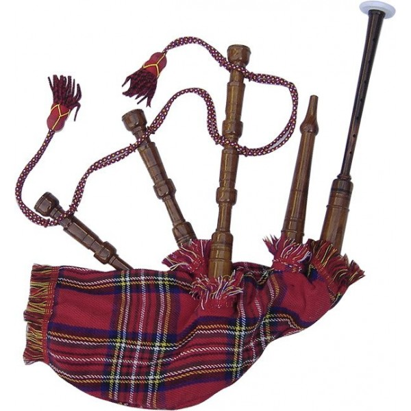

Our Products
These are our available products:
Modern German bagpipe
- A Modern German bagpipe created with the best materials imported from Germany
Asturian Gaita
- The gaita asturiana is a type of bagpipe native to the autonomous communities of Principality of Asturias and Cantabria on the northern coast of Spain.
Swedish säckpipa
- The instrument that today is referred to as Swedish bagpipes is a construction based on instruments from the western parts of the district called Dalarna, the only region of Sweden where the bagpipe tradition survived into the 20th century.
Scottish Great Highland bagpipe
- The Great Highland bagpipe is a type of bagpipe native to Scotland. It has acquired widespread recognition through its usage in the British military and in pipe bands throughout the world.